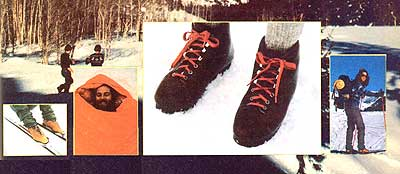

LEFT TO RIGHT: Want to cover a lot of (snow-blanketed) ground fast? You can do it, with Caribou cross-country skis by Rossignol ($75 while they last: Next year, the price goes up) . . . This happy fellow's sleeping bag is a down-filled Trailwise Chevron weighing just two pounds, 12 ounces (ideal for ski touring). Retail price: $210 . . . If you've got up to $70 to spend on boots, you may well want to check out these Swiss-made, Vibram-soled wonders from Raichle. Note the absence of visible seams . . . North Face's lightweight Kak Pack II frameless rucksack is great for ski touring, mountaineering, and miscellaneous short trips. A lot of pack for $80.